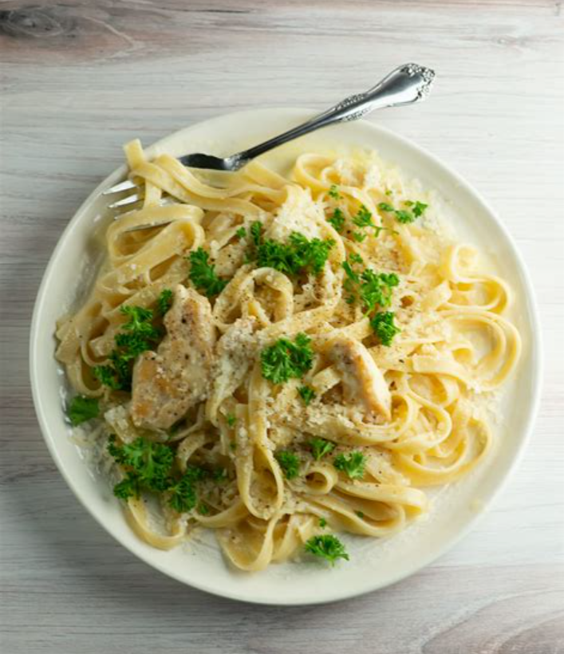

Chicken Fettucine Alfredo

Description
Mom’s creamy Chicken Fettuccine Alfredo has been a family
favorite for years. Classic Chicken Alfredo is a feel good
comfort food – so creamy but light!
Ingredients
- 2 lbs Chicken Breast
- 3/4 lbs fettuccine pasta , (or angel hair or vermicelli pasta)
- 1 lb white mushrooms, thickly sliced
- 1 small onion, finely chopped
- 3 cloves garlic, minced
- 3 1/2 cups half and half
- 1/4 cup parsley, finely chopped,, plus more for garnish
- 1 tsp sea salt, or to taste, plus more for pasta water
- 1/4 tsp black pepper, or to taste
- 3 Tbsp olive oil, divided
- 1 Tbsp unsalted butter
Steps
- Cook fettuccini in a pot of salted water (4 qts water, 1 Tbsp salt,)
according to package instructions then drain and set aside.
- Meanwhile, slice chicken into strips and season all over with salt
and pepper. In a large skillet, heat 2 Tbsp olive oil over medium/high
heat and sauté chicken until lightly golden and cooked through (5 min).
Remove chicken from the pan and cover to keep warm.
- In the same pan over medium/high, heat 1 Tbsp olive oil and 1 Tbsp of
butter. Add onion and sauté 3 min until soft. Add sliced mushrooms and
sauté until soft (5-7 min), stirring frequently. Add garlic and sauté
30 seconds, stirring constantly.
- Add half-n-half and simmer over medium/high heat 8-10 min, or
until beginning to thicken. Add chicken back to the pan, add 1/4
cup parsley and season sauce to taste (1/2 to 1 tsp salt and 1/4
tsp pepper).
- Add cooked pasta and stir to combine. Heat another minute until warmed
through then turn off the heat, cover and let rest 10-15 minutes then
stir and serve garnished with parsley.
Note: *To substitute half and half, use equal parts of milk and heavy cream.
If you prefer a thicker creamier sauce, you can use heavy whipping
cream instead
*link to the original recipe, pls don't get mad at me
:3 this is just for learning purposes